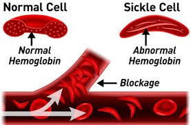

Sickle Cell Aneia
General Information
Sickle Cell Disease is a group of inherited red blood cell disorders that is present from birth. Healthy red blood cells are round and move easily through small blood vessels to carry oxygen throughout the body. However, in someone who has sickel cell disease, the red blood cells become hard and sticky, and have a C-shape, like a farmer's sickle. The sickle cells die early, which casues a constant shortage of red blood cells called anemmia.
_

Managing Sickle cell
- Get routine check-ups
- Prevent Infections
- Learn healthy habits
- Drink enough water!
Get Routine Check-ups
Sickle Cell Disease is a complex disease. Good quality medical care from doctors and nurses who know a lot about the disease can help prevent some serious problems. Often the best choice is a hematologist (a doctor who specializes in blood diseases) working with a team of specalists.
Regular health checkups with a primary care doctor can help prevent some serious problems.
Children and adults from 2 years of age or older should see a doctor at least once every year.
Prevent Infections
Common illnesses, like the flu, can quickly become dangerous for a chils with sickle cell disease. The best defence is to take simple steps to help prevent infections.
Learn Healthy Habits – Drink Enough Water!
People with sickle cell disease should drink 8 to 10 glasses of water every day and eat healthy food. Try not to get too hot, too cold, or too tired. Children can, and should, participate in physical activity to help stay healthy. However, it’s important that they don’t overdo it, rest when tired, and drink plenty of water.
Go to an emergency room or urgent care facility right away for:
- Fever above 101° F
- Difficulty breathing
- Chest pain
- Abdominal (belly) swelling
- Severe headache
- Sudden weakness or loss of feeling and movement
- Seizure
- Painful erection of the penis that lasts more than 4 hours
- Pain anywhere in the body that will not go away with treatment at home
- Any sudden problem with vision